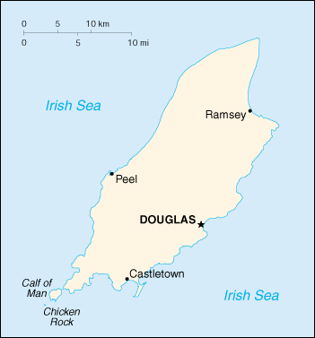

(British crown dependency)
|
Man, Isle of (British crown dependency) |
|
| Introduction Geography People Government Economy Communications Transportation Military Transnational Issues | ||
|  | ||
| Man, Isle of | Introduction | Top of Page |
| Background: | Part of the Norwegian Kingdom of the Hebrides until the 13th century when it was ceded to Scotland, the isle came under the British crown in 1765. Current concerns include reviving the almost extinct Manx Celtic language. |
| Man, Isle of | Geography | Top of Page |
| Location: | Western Europe, island in the Irish Sea, between Great Britain and Ireland |
| Geographic coordinates: | 54 15 N, 4 30 W |
| Map references: | Europe |
| Area: |
total:
572 sq km
land: 572 sq km water: 0 sq km |
| Area - comparative: | slightly more than three times the size of Washington, DC |
| Land boundaries: | 0 km |
| Coastline: | 160 km |
| Maritime claims: |
exclusive fishing zone:
12 NM
territorial sea: 12 NM |
| Climate: | cool summers and mild winters; temperate; overcast about one-third of the time |
| Terrain: | hills in north and south bisected by central valley |
| Elevation extremes: |
lowest point:
Irish Sea 0 m
highest point: Snaefell 621 m |
| Natural resources: | none |
| Land use: |
arable land:
9%
permanent crops: 0% permanent pastures: 46% forests and woodland: 6% other: 39% (includes 25% mountain and heathland) |
| Irrigated land: | 0 sq km |
| Natural hazards: | NA |
| Environment - current issues: | waste disposal (both household and industrial); transboundary air pollution |
| Geography - note: | one small islet, the Calf of Man, lies to the southwest, and is a bird sanctuary |
| Man, Isle of | People | Top of Page |
| Population: | 73,489 (July 2001 est.) |
| Age structure: |
0-14 years:
17.51% (male 6,562; female 6,306)
15-64 years: 65.19% (male 24,061; female 23,845) 65 years and over: 17.3% (male 5,076; female 7,639) (2001 est.) |
| Population growth rate: | 0.52% (2001 est.) |
| Birth rate: | 11.58 births/1,000 population (2001 est.) |
| Death rate: | 11.84 deaths/1,000 population (2001 est.) |
| Net migration rate: | 5.44 migrant(s)/1,000 population (2001 est.) |
| Sex ratio: |
at birth:
1.05 male(s)/female
under 15 years: 1.04 male(s)/female 15-64 years: 1.01 male(s)/female 65 years and over: 0.66 male(s)/female total population: 0.94 male(s)/female (2001 est.) |
| Infant mortality rate: | 6.42 deaths/1,000 live births (2001 est.) |
| Life expectancy at birth: |
total population:
77.64 years
male: 74.26 years female: 81.2 years (2001 est.) |
| Total fertility rate: | 1.65 children born/woman (2001 est.) |
| HIV/AIDS - adult prevalence rate: | NA% |
| HIV/AIDS - people living with HIV/AIDS: | NA |
| HIV/AIDS - deaths: | NA |
| Nationality: |
noun:
Manxman (men), Manxwoman (women)
adjective: Manx |
| Ethnic groups: | Manx (Norse-Celtic descent), Briton |
| Religions: | Anglican, Roman Catholic, Methodist, Baptist, Presbyterian, Society of Friends |
| Languages: | English, Manx Gaelic |
| Literacy: |
definition:
NA
total population: NA% male: NA% female: NA% |
| Man, Isle of | Government | Top of Page |
| Country name: |
conventional long form:
none
conventional short form: Isle of Man |
| Dependency status: | British crown dependency |
| Government type: | parliamentary democracy |
| Capital: | Douglas |
| Administrative divisions: | there are 24 local authorities each with its own elections |
| Independence: | none (British crown dependency) |
| National holiday: | Tynwald Day, 5 July |
| Constitution: | unwritten; note - The Isle of Man Constitution Act, 1961, does not embody the Manx Constitution |
| Legal system: | English common law and Manx statute |
| Suffrage: | 18 years of age; universal |
| Executive branch: |
chief of state:
Lord of Mann Queen ELIZABETH II (since 6 February 1952), represented by Lieutenant Governor His Excellency Sir Timothy DAUNT (since 27 October 1995)
head of government: Chief Minister Donald GELLING (since 3 December 1996) cabinet: Council of Ministers elections: the monarch is hereditary; lieutenant governor appointed by the monarch for a five-year term; the Chief Minister is elected by the Tynwald; election last held 3 December 1996 (next to be held NA 2001) election results: Donald GELLING elected chief minister by the Tynwald |
| Legislative branch: |
bicameral Tynwald consists of the Legislative Council (a 11-member body composed of the President of Tynwald, the Lord Bishop of Sodor and Man, a nonvoting attorney general, and 8 others named by the House of Keys) and the House of Keys (24 seats; members are elected by popular vote to serve five-year terms)
elections: House of Keys - last held 21 November 1996 (next to be held NA November 2001) election results: House of Keys - percent of vote by party - NA%; seats by party - independents 24 |
| Judicial branch: | High Court of Justice (justices are appointed by the Lord Chancellor of England on the nomination of the lieutenant governor) |
| Political parties and leaders: | there is no party system; members sit as independents |
| Political pressure groups and leaders: | none |
| International organization participation: | none |
| Diplomatic representation in the US: | none (British crown dependency) |
| Diplomatic representation from the US: | none (British crown dependency) |
| Flag description: | red with the Three Legs of Man emblem (Trinacria), in the center; the three legs are joined at the thigh and bent at the knee; in order to have the toes pointing clockwise on both sides of the flag, a two-sided emblem is used |
| Man, Isle of | Economy | Top of Page |
| Economy - overview: | Offshore banking, manufacturing, and tourism are key sectors of the economy. The government's policy of offering incentives to high-technology companies and financial institutions to locate on the island has paid off in expanding employment opportunities in high-income industries. As a result, agriculture and fishing, once the mainstays of the economy, have declined in their shares of GDP. Banking and other services now contribute 42% to GDP. Trade is mostly with the UK. The Isle of Man enjoys free access to EU markets. |
| GDP: | purchasing power parity - $1.4 billion (1999 est.) |
| GDP - real growth rate: | 13.5% (1999 est.) |
| GDP - per capita: | purchasing power parity - $18,800 (1999 est.) |
| GDP - composition by sector: |
agriculture:
1%
industry: 9% services: 90% (1999 est.) |
| Population below poverty line: | NA% |
| Household income or consumption by percentage share: |
lowest 10%:
NA%
highest 10%: NA% |
| Inflation rate (consumer prices): | 2.5% (2000 est.) |
| Labor force: | 36,610 (1998) |
| Labor force - by occupation: | agriculture, forestry and fishing 3%, manufacturing 11%, construction 10%, transport and communication 8%, wholesale and retail distribution 11%, professional and scientific services 18%, public administration 6%, banking and finance 18%, tourism 2%, entertainment and catering 3%, miscellaneous services 10% |
| Unemployment rate: | 0.6% (August 2000) |
| Budget: |
revenues:
$485 million
expenditures: $463 million, including capital expenditures of $NA (FY00/01 est.) |
| Industries: | financial services, light manufacturing, tourism |
| Industrial production growth rate: | 3.2% (FY96/97) |
| Agriculture - products: | cereals, vegetables; cattle, sheep, pigs, poultry |
| Exports: | $NA |
| Exports - commodities: | tweeds, herring, processed shellfish, beef, lamb |
| Exports - partners: | UK |
| Imports: | $NA |
| Imports - commodities: | timber, fertilizers, fish |
| Imports - partners: | UK |
| Debt - external: | $NA |
| Economic aid - recipient: | $NA |
| Currency: | British pound (GBP); note - there is also a Manx pound |
| Currency code: | GBP |
| Exchange rates: | Manx pounds per US dollar - 0.6764 (January 2001), 0.6596 (2000), 0.6180 (1999), 0.6037 (1998), 0.6106 (1997), 0.6403 (1996); the Manx pound is at par with the British pound |
| Fiscal year: | 1 April - 31 March |
| Man, Isle of | Communications | Top of Page |
| Telephones - main lines in use: | 51,000 (1999) |
| Telephones - mobile cellular: | NA |
| Telephone system: |
general assessment:
NA
domestic: landline, telefax, mobile cellular telephone system international: fiber-optic cable, microwave radio relay, satellite earth station, submarine cable |
| Radio broadcast stations: | AM 1, FM 1, shortwave 0 (1998) |
| Radios: | NA |
| Television broadcast stations: | 0 (receives broadcasts from the UK and satellite) (1999) |
| Televisions: | 27,490 (1999) |
| Internet country code: | .im |
| Internet Service Providers (ISPs): | NA |
| Internet users: | NA |
| Man, Isle of | Transportation | Top of Page |
| Railways: | total: 68.5 km (43.5 km electrified) |
| Highways: |
total:
800 km
paved: 800 km unpaved: 0 km (1999) |
| Waterways: | none |
| Ports and harbors: | Castletown, Douglas, Peel, Ramsey |
| Merchant marine: |
total:
157 ships (1,000 GRT or over) totaling 4,917,402 GRT/8,333,858 DWT
ships by type: bulk 27, cargo 13, chemical tanker 11, combination bulk 3, container 20, liquefied gas 13, petroleum tanker 43, refrigerated cargo 3, roll on/roll off 18, specialized tanker 1, vehicle carrier 5 note: includes some foreign-owned ships registered here as a flag of convenience: Belgium 1, Denmark 1, Germany 1, Netherlands 1, Sweden 1, UK 3 (2000 est.) |
| Airports: | 1 (2000 est.) |
| Airports - with paved runways: |
total:
1
1,524 to 2,437 m: 1 (2000 est.) |
| Man, Isle of | Military | Top of Page |
| Military - note: | defense is the responsibility of the UK |
| Man, Isle of | Transnational Issues | Top of Page |
| Disputes - international: | none |
{kind=link}
{kind=link}